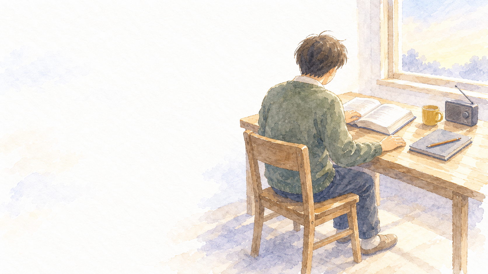

LiFE with 社会福祉士の学び
学校で働きながら社会福祉士を学ぶ人のための、毎日の学びの記録です。公開されている検証報告書、法律の条文、国の統計をもとに、ラジオ、動画、図解、条文の穴埋めで学びます。
毎日の学び
学び方
| 順番 | やること |
|---|---|
| 1 | 今日の問いを3つ聞いて、まず自分で考える |
| 2 | 公開された事例を聞く |
| 3 | 条文を原文で読む |
| 4 | 国の統計と重ねる。板書と図解で整理する |
| 5 | 自分の教室に置き換えて考える |
| 6 | 答え合わせをする。3日後・7日後・21日後に復習する |
国家試験は6つの科目群に分かれています。週ごとに中心の科目群を決め、ほかの科目群の問いも混ぜて出します。
このサイトについて
小学校の教員である私が、自分の受験勉強として毎日作っているものを、そのまま公開しています。
資格を目指す人だけでなく、子どもと家庭を支えるために福祉を学びたい先生にも使えるように作っています。
学校の仕事とは別に、自分の時間で作っています。勤務校や子どもの情報は扱いません。
教材は生成AI（Claude）を使って作り、出典と照らし合わせて確かめています。事例は国や自治体が公開した検証報告書の要約で、個人が特定される情報は載せません。法律の判断が必要なときは、専門家に相談してください。
© LiFE with 絵：野々宮すみれ（LiFE withの素材スタジオ）